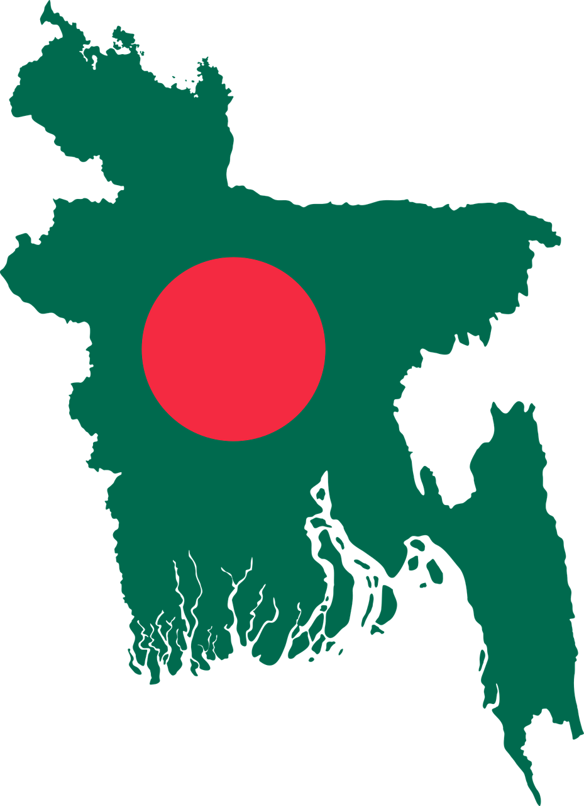

Bangladesh ( বাংলা দেশ )

Bangladesh National Parliament The Parliament of Bangladesh is a unicameral legislature consisting of 300 members. They are directly elected from each constituency on the basis of first-past-the-post system. With the exception of the first Parliament, which had 15 reserved seats for women, and the fourth Parliament, which had no such reservation, all previous Parliaments (before 8th Parliament) of Bangladesh included the 30 reserved seats. In the 8th Parliament the (Fourteenth Amendment) was passed. In Art. 65(3)"Until the dissolution of Parliament occurring next after the expiration of the period of ten years beginning from the date of the first meeting of the Parliament next after the Parliament in existence at the time of the commencement of the Constitution (Fourteenth Amendment) Act. 2004, there shall be reserved forty five seats exclusively for women members and they will be elected by the aforesaid members in accordance with law on the basis of procedure of proportional representation in the Parliament through single transferable vote:". This reservation of seats in favor of women did not disqualify them from being candidates in the general election." The fifteenth Amendment, dated 3rd July, 2011, incveased the reserve seats for the women increase 45 to 50.The Constitution of Bangladesh in its two texts, Bengali and English, gives the unicameral legislature the name of 'Jatiyo Shangshad' in Bengali and 'House of the Nation' in English.The Constitution of Bangladesh in its two texts, Bengali and English, gives the unicameral legislature the name of 'Jatiyo Shangshad' in Bengali and 'House of the Nation' in English.The constitution calls for establishment of key parliamentary committees provides horizontal oversight over the executive branch of the government.